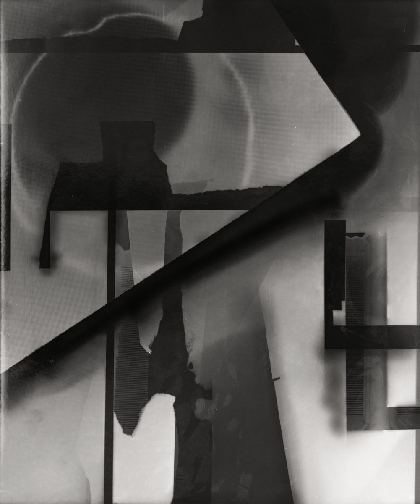
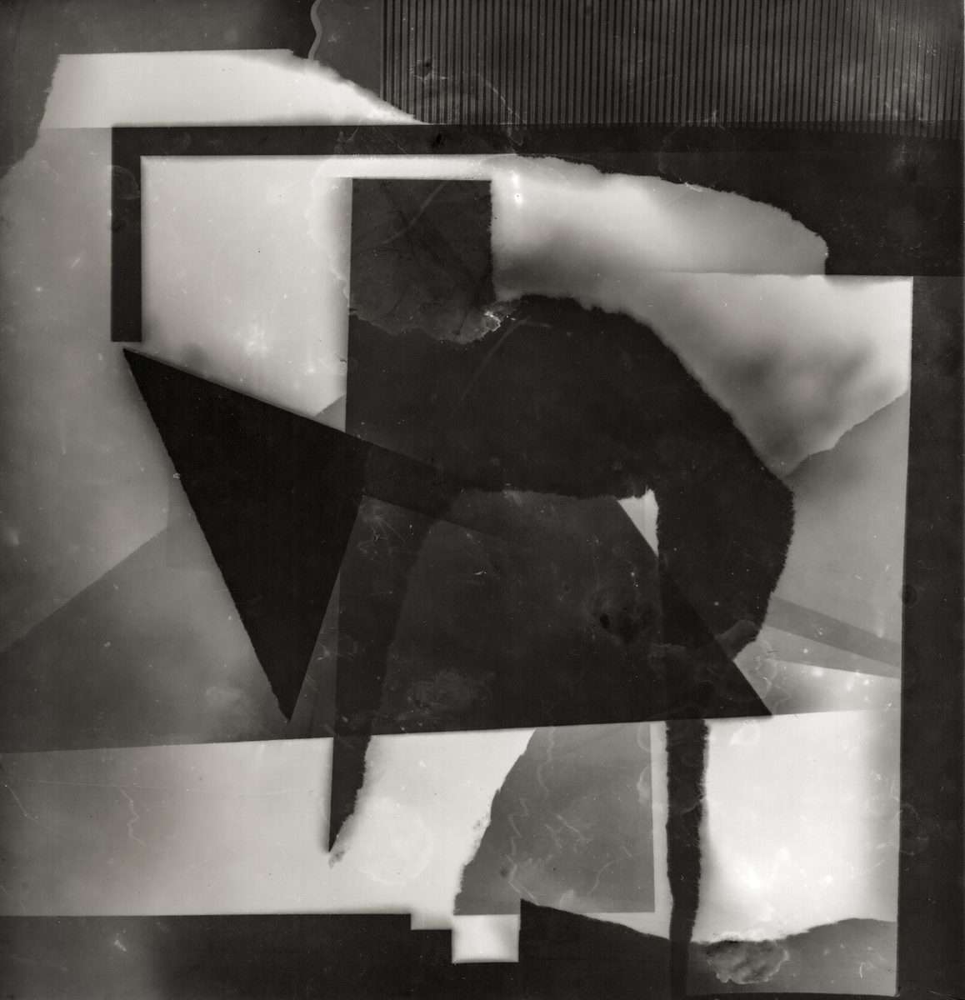
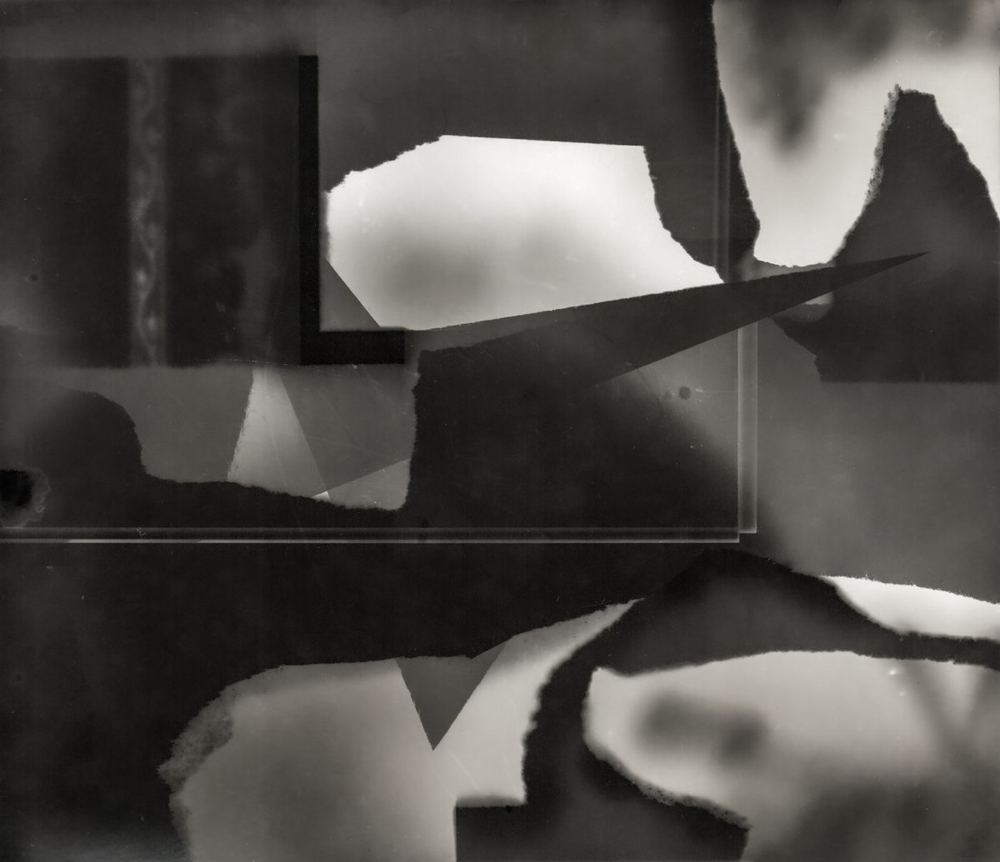
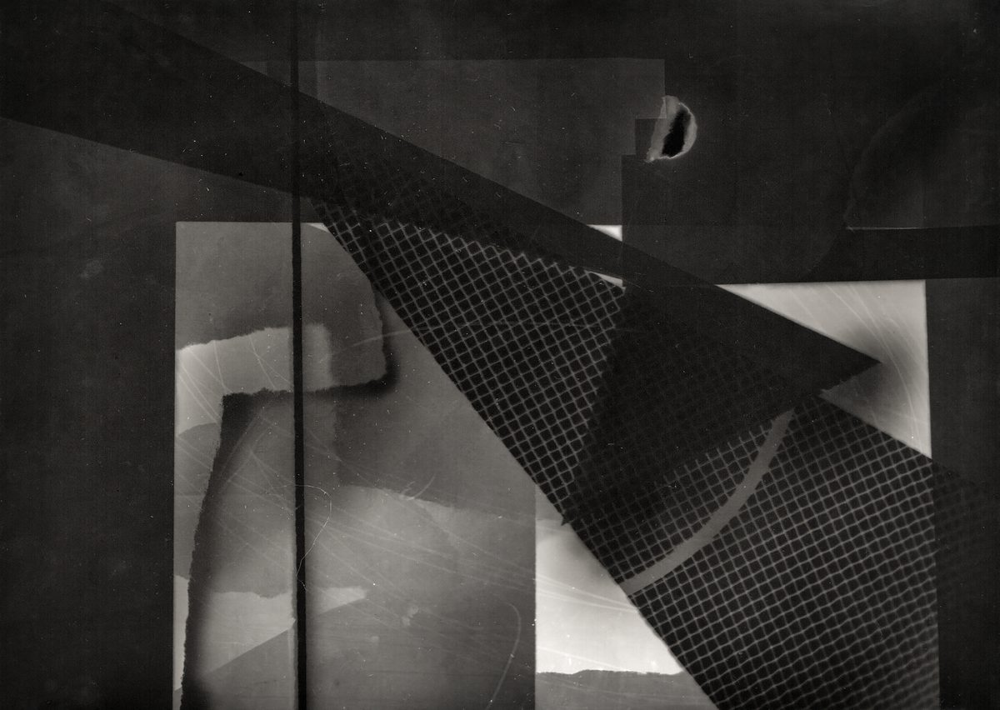
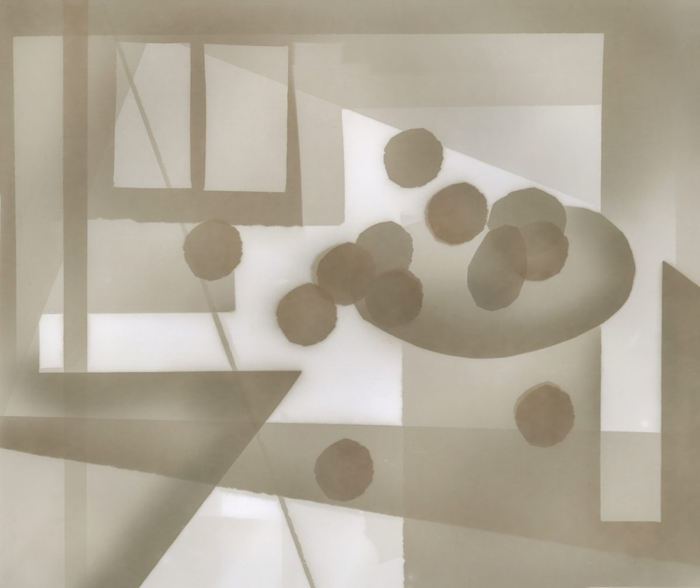
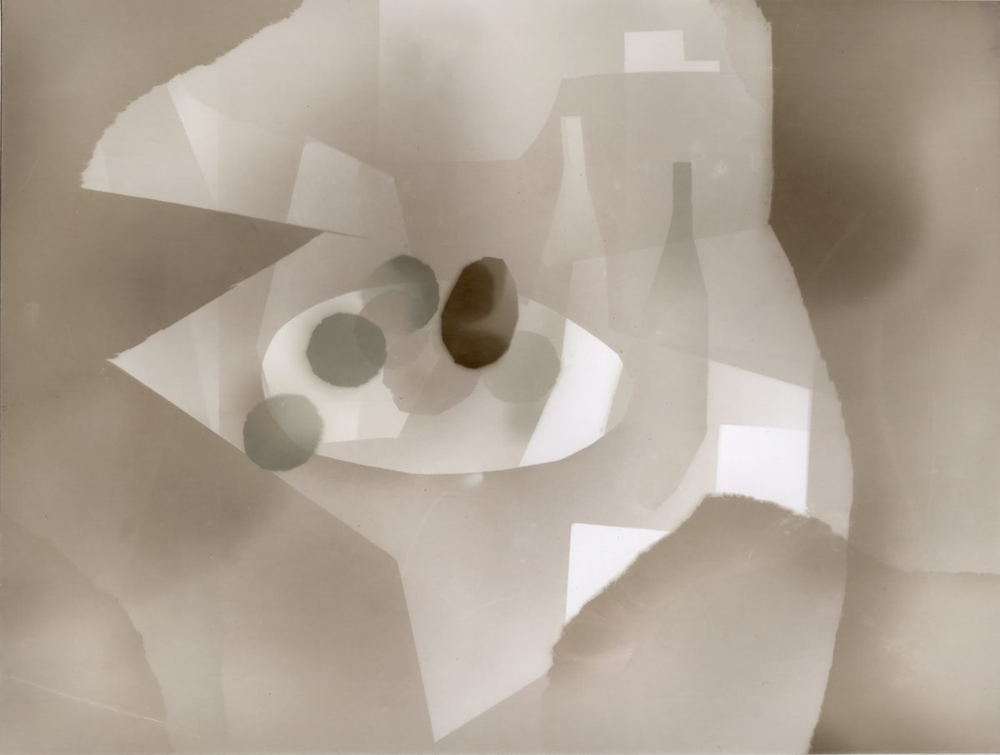
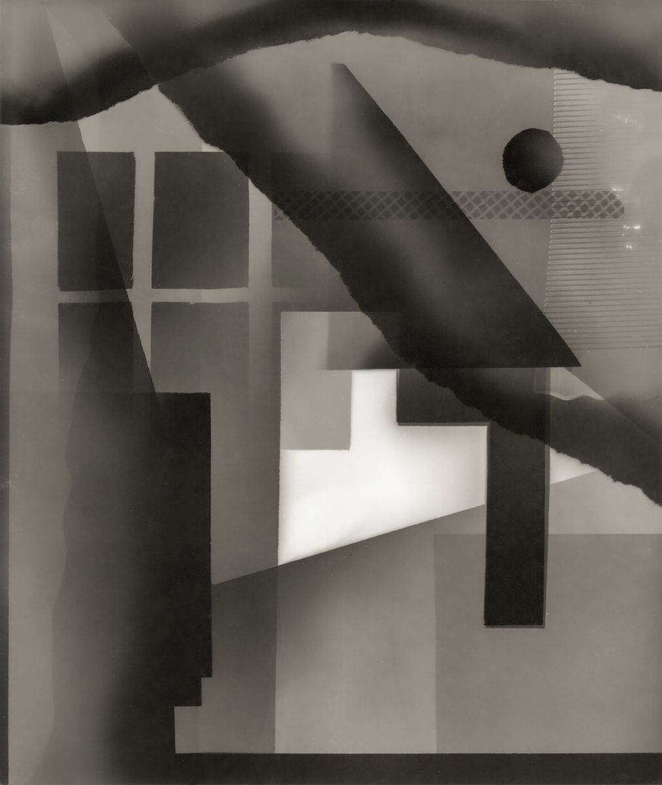
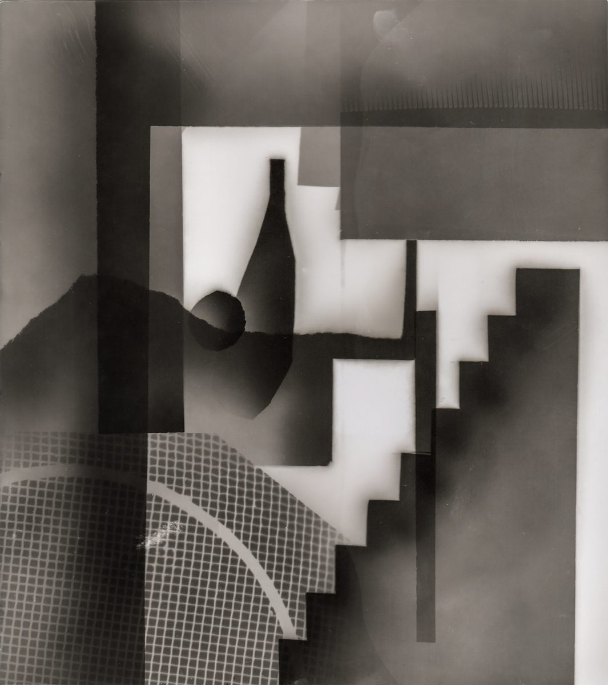

狩猎的房间


简介
以传统暗房工艺为基础，通过遮挡、分割、多次曝光与局部控制，直接在感光相纸上建构图像。作品借由这些手工操作，重新回看摄影术早期暗房中的“修图”实践，使暗房不再只是影像显现的空间，也成为重新组织现实、制造图像关系的场所。
画面的构图方式受到塞尚静物绘画的影响，桌面、器物与室内结构被拆解为相互错位、叠加的平面，削弱单一透视所建立的稳定空间。与此同时，图像中的明暗并非来自物体本身，而由光照时间、移动速度与曝光强度共同形成，光因此成为直接塑造空间与结构的材料。
作品试图从摄影最基本的感光机制出发，讨论图像如何在光、时间与人为控制之间被重新建构，并由此形成一个介于现实空间与图像空间之间的不稳定场域。














